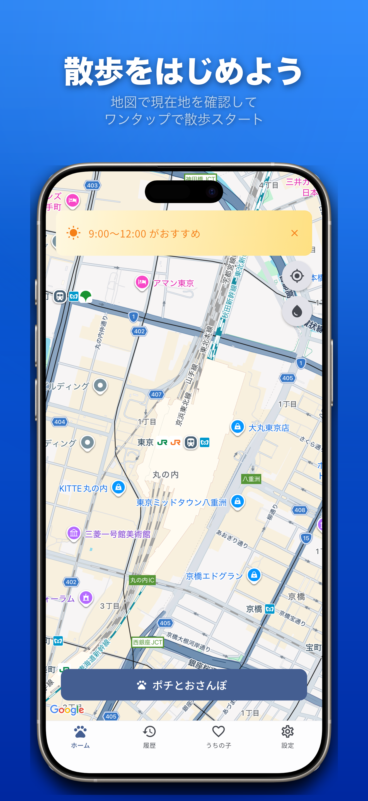
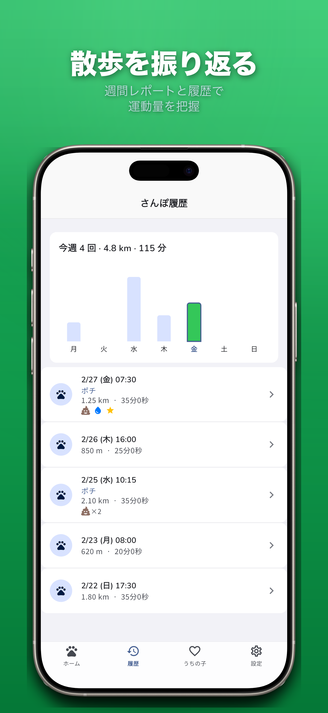
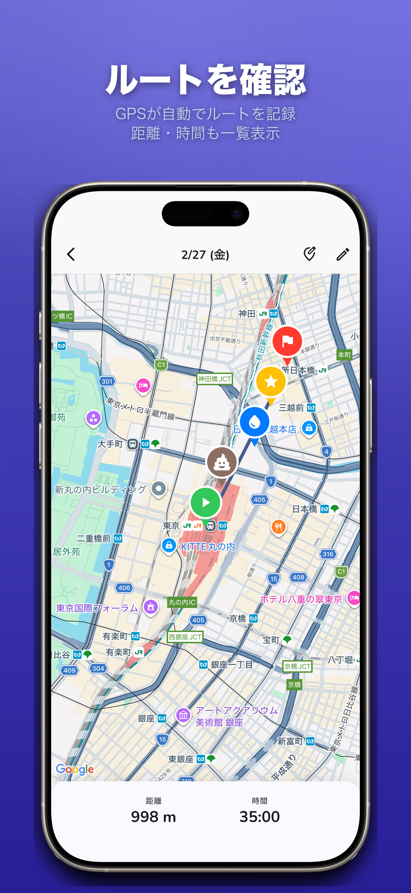
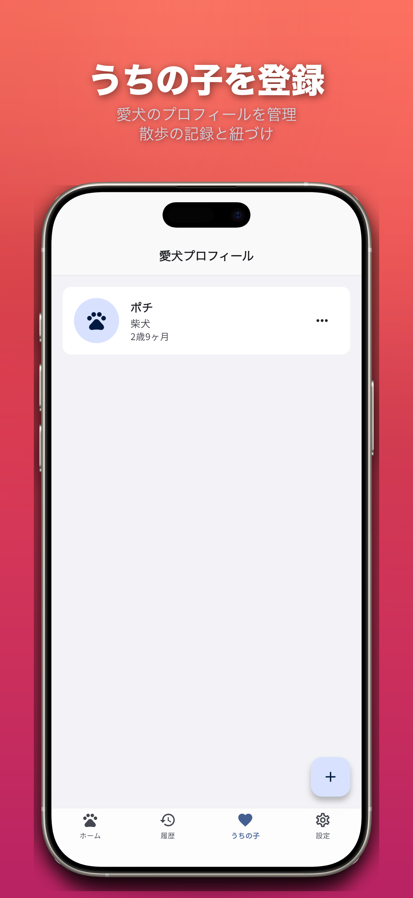
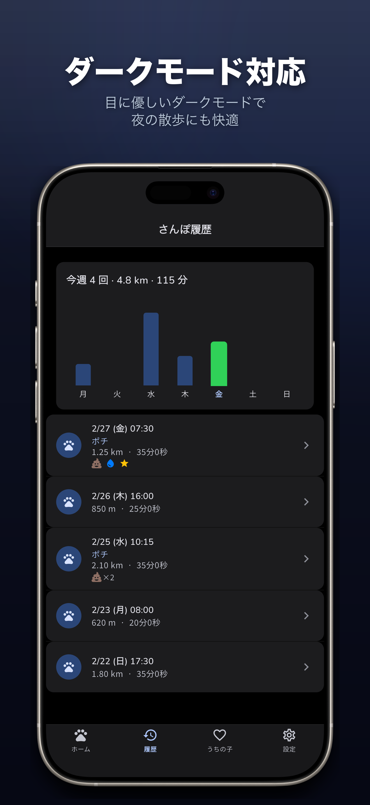
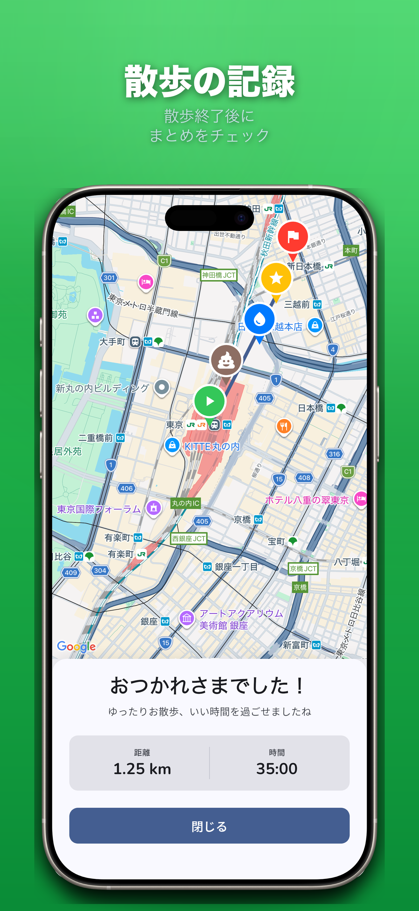

愛犬との散歩を、もっと豊かに。
「わんぽ」は、GPSで散歩ルートを自動記録し、歩いた距離・時間を振り返れる愛犬の散歩管理アプリです。週間レポートで散歩の習慣が一目でわかります。
App Storeからダウンロード 無料ダウンロード
愛犬との散歩をもっと楽しく
散歩の記録から習慣管理まで、愛犬と飼い主をサポートする機能が揃っています。
GPSルート記録
散歩を開始するだけで自動記録
週間レポート
散歩の習慣を一目で把握
散歩履歴
過去の散歩をいつでも振り返り
ルート確認
地図上でルートを詳細確認
愛犬登録
プロフィールを管理・紐づけ
ダークモード
夜の散歩にも最適
ワンタップで散歩スタート
現在地を地図で確認し、ボタンひとつで散歩を開始。GPSがバックグラウンドでもルートをしっかり記録し続けます。
週間レポートで振り返り
今週の散歩回数・距離をバーチャートで一目確認。散歩の習慣づけや運動量の把握に役立ちます。

ルートを地図で確認
歩いたコースを地図上で詳しく確認。距離・時間も一覧表示されます。

愛犬プロフィールを管理
愛犬の名前・犬種・生年月日を登録して、散歩の記録と紐づけましょう。

ダークモード対応
目に優しいダークモードで夜の散歩にも快適。システム設定に自動追従します。

スクリーンショット

よくある質問
はい、無料でダウンロードできます。
はい、スマホをポケットにしまったままでも記録し続けます。
はい、複数の愛犬を登録し、散歩ごとに紐づけできます。
はい、散歩データはすべてデバイスにローカル保存されます。詳しくはプライバシーポリシーをご覧ください。